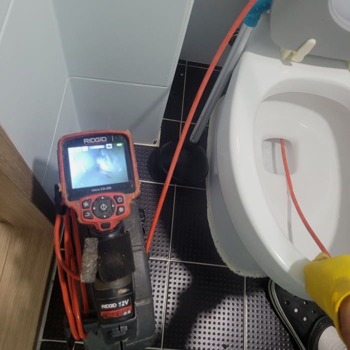
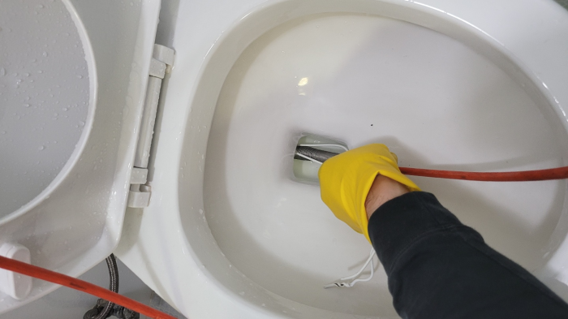
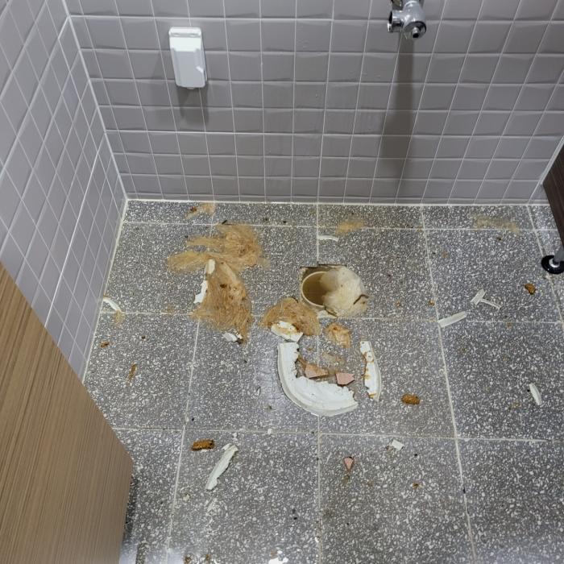
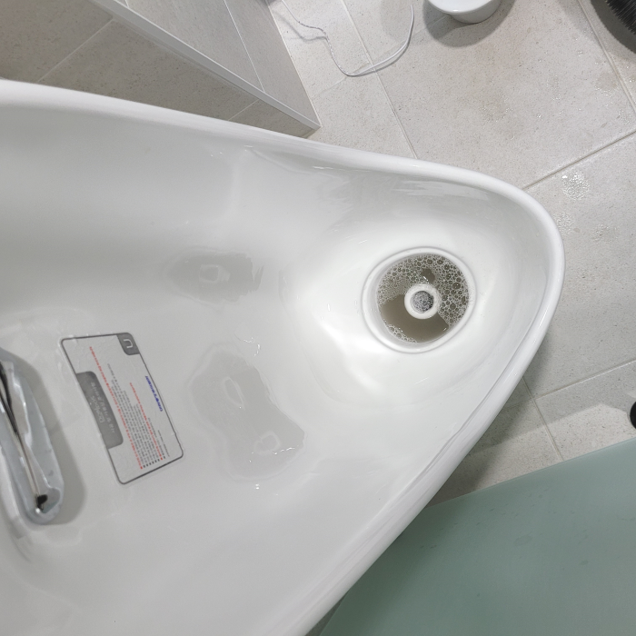
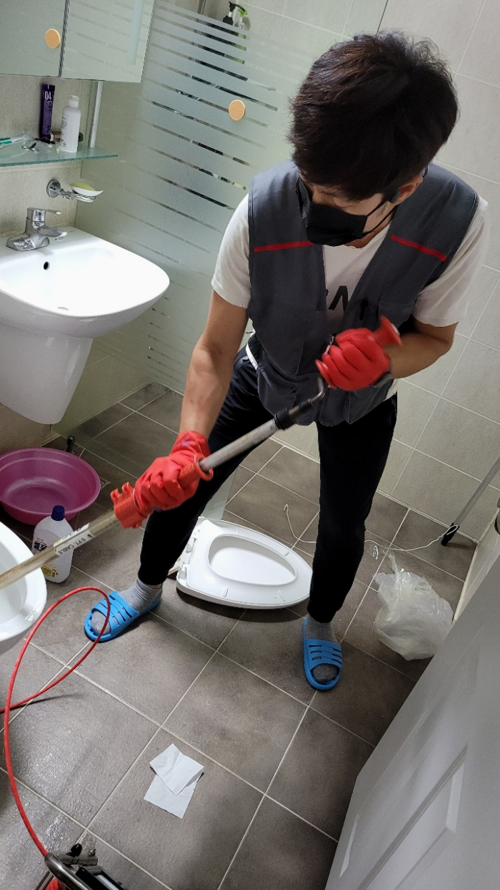
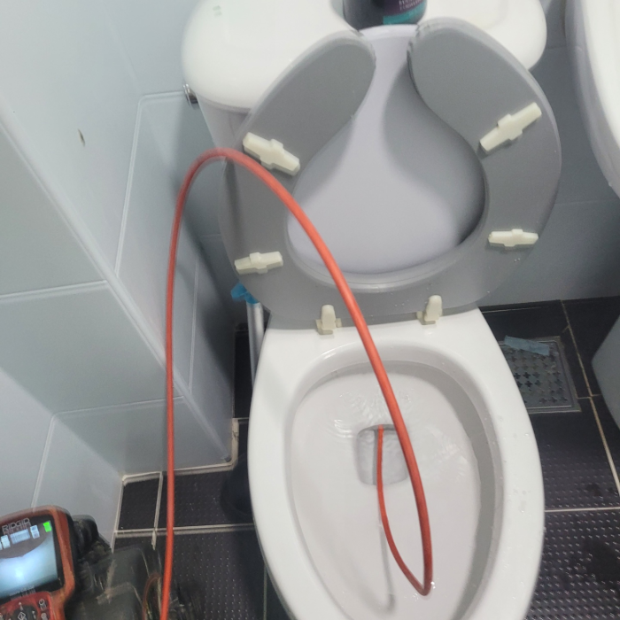

🏠 화성 남양 대변기막힘 비봉 변기부속수리 배관설비
화성 남양 싱크대막힘 전문 시공 후기

📋 작업 개요
- 위치: 화성 남양, 남양, 화성
- 서비스 유형: 싱크대막힘, 변기막힘, 하수구막힘, 배관막힘, 역류해결, 뚫는업체, 배관청소, 고압세척, 설비공사
- 작업 일시: 2023. 12. 8. 19:33
- 업체명: 하수구수사대 (010-5615-2118)
🔍 문제 상황
안녕하세요^^
설비전문업체 "하수구수사대"를 찾아주셔서 감사합니다^^
퇴수막힘은 눈으로 보이지 않고 퇴수막힘을 유발하는 이물질의 종류와 량의 따라서 그 상태에 있어서 조금씩 차이가 있을수 이어 배관 구조에 대한 지식이 없이는 제대로 해결을 하는 것이 어려울수 있어요.
화성 남양 대변기막힘 비봉 변기부속수리 배관설비
저희는 배수관의 내부를 전체적으로 확인을 해야 했고 막힘 문제가 어떻게 발생했는지를 정확하게 파악해 볼 필요가 있었습니다. 그래서 건물 외벽으로 주위를 돌면서 배수관를 꼼꼼하게 점검하는 작업을 하였는데요.

🔎 원인 분석
💡 전문가 진단: 화성 남양 대변기막힘 비봉 변기부속수리 배관설비
무조건 저렴한 업체를 이용하시는게 정답이 아닌 이유가 바로 이것입니다. 배수 대부분 가격을 미리 정해놓고 출동하는곳들은 어떤 상황이든 간에 같은 작업만 해주고 철수 합니다. 받은 돈 만큼만 일하기 때문입니다.
만약 하수배관이 파손이 된다면 공사로 이어진다 보니 많은 지출을 하게 된다는 점을 알고 계셨으면 해요. 예약하신 고객분께서도 직접 해보시려고 한 흔적은 있었지만 다행히도 심한 압박을 주지 않았는지 괜찮았어요.
배관막힘에 따라 통수방식이 다르기에 최신장비를 갖고서 확실한 검수,진단에 맞춰 적합한 장비를 골라 작업을 진행해야합니다. 저희는 최신장비를 비롯해서 고압세척,정밀관찰,내시경 여러종에 장비를 싣고 현장을 다니기 때문에 즉시 해결이 가능합니다.
배수구 막힘으로 인해서 생기는 불편함을 줄이기 위해서는 평소에 정기적으로 관심을 가지고 한 번씩 점검을 해주는 것이 필요하다고 할 수 있습니다. 배수구 막힘이 발생을 하게 되면 어떤 분들은 급하고 당황스러운 마음에 혼자서 해결을 하고자 하는데요.
전체적인 문제점을 확인한 다음배출구 청소해야 한다는 사실을 알 수 있었습니다.배관은 오래된 건물의 경우 특히 더 손상될 위험이 있으며 내부에 오염도가 심각하기 때문에 신중한 작업이 필요합니다.

🔧 작업 과정
이러한 이물질을 제거하기 위해서는 이물질 및 물을 제거하는 석션기를 이용해야 합니다. 그러고 나서 고압세척을 통해 배수 내부 깊숙이 있는 덩어리를 제거해 주어야 해요.
고객님은 퇴수구막힘 경험을 처음 하셨기 때문에 굉장히 당황하셨다고 했죠. 오물이 퇴수구로 넘치기 시작했는데 처음엔 조금 넘치던 게 점점 그 양이 많아졌다고 하셨죠. 퇴수구가 막히면 물이 내려가지 않는 것으로 끝나지 않습니다.
배출구막힘 처리하지못한것에 관련해서는 금액을요구하는일은 있을수가없어요.방문한게다인데도 결제해야될때면 금액이배로들어서 고객분들만 기분이나빠지시는데요
피같은돈을 들이는것인데 일을맡겼다가 실패하는건아닐지 걱정만 앞서실겁니다.오늘시간에는배관막힘 이같은문제들을 해결해드리고자 저희만의 강점들을 소개드려보겠습니다.
스스로해결이되는 상황이였으면 배출구 전문기사는있지도 않았을겁니다.배관에있는 석회들은 물에는녹지못하고 안타깝지만 시간이가면갈수록 지속적으로 누적되어서 상황이심각해지게됩니다.
좋지않은곳은 배출관뚫으면그만이라고 여겨버리고 재발되어버리면 무시하는일도 꽤많이있답니다.이러한것들이 차이가있기에 거의모든분들이 하수구가또 막혀버렸을때 연락을다시주시면 믿음에 보답하고자 성실하게 처리하고있습니다.
장시간 두고 보시면 금방 이물질이 다시 생기면서 퇴수배관이 막혀버리니 꼼꼼하고 정확하게 작업하는 곳을 고르셔야 합니다. 뭐든 싸다고 정답이 아니듯이 저렴하고 빨리 해결해 주는 곳만 찾다 보면 꼭 후회하니까 신중하게 선택해야 합니다.
모든 과정은 고객님께 상세히 작업과정을 설명해 드리고 있으니 걱정하지 않으셔도 됩니다. 배관배관 속 굳어있는 이물질 제거를 위해 샤프트 장비를 투입하여 딱딱한 것들을 분쇄했습니다.


✅ 작업 완료
고압세척기가 열심히 파쇄한 찌꺼기들부터 빠르게 밖으로 걷어내고 내시경 카메라로 배출관내부를 다시 한번 살펴봅니다. 참고로 이물질 제거에는 펌프와 석션기가 동원되었는데 덕분에 내시경 시야도 충분히 확보되었습니다.
상황이 엉망인 상태에서 변기를 전혀 사용하지 못하고 있다면, 배출관전문설비업체를 불러 확인하고 수리를 맡겨보세요. 그게 최선의 방법입니다.
#하수구막힘 #하수구뚫음 #하수구역류 #씽크대막힘 #싱크대역류 #오수관막힘 #하수구청소 #욕실하수구막힘 #변기막힘 #하수구뚫는비용 #싱크대수리 #화장실막힘




⚠️ 주방 싱크대 배관 막힘 예방 수칙
- ✅ 기름기가 묻은 식기나 프라이팬은 설거지 전 키친타올로 반드시 기름때를 닦아내세요.
- ✅ 주기적으로 싱크대 개수대에 뜨거운 물을 가득 받아 한 번에 내려 배관 내부 기름을 씻어내세요.
- ✅ 배수구 거름망을 미세한 필터로 사용하시고 음식물 찌꺼기가 틈으로 새어 들지 않게 관리하세요.
- ✅ 베이킹소다와 식초를 뜨거운 물과 함께 일주일에 한 번씩 부어주면 배관 살균과 막힘 예방에 좋습니다.
💡 핵심 정리
- 확실한 장비 작업(내시경 점검 및 샤프트 스케일링)으로 원인을 뿌리 뽑습니다.
- 작업 후 1년 이내에 동일한 부위 재발 시 100% 무상 A/S 서비스를 보장합니다.
- 서울 · 경기 · 인천 전 지역에 24시간 언제든 긴급 출동할 수 있도록 항시 대기 중입니다.
❓ 자주 묻는 질문 (FAQ)
🚨 화성 남양 싱크대막힘 문제로 고민이신가요?
정확한 원인 진단과 확실한 시공으로 재발 없는 해결을 약속드립니다.
24시간 긴급 출동 | 서울 · 경기 · 인천 전지역 | 1년 내 재발 시 무상 A/S